這本手冊說明 Retis Terminal「策略監看」裡每一種策略範本：它在做什麼、適合什麼情況、怎麼建立與執行，以及每一個參數的意思和怎麼設定。還沒安裝或登入的話，請先看《Retis Terminal 公開測試版使用指南》。
提醒：策略監看只做模擬交易，不會真的下單。本手冊的範例與數字只是說明工具怎麼用，不是投資建議；過去的表現不代表未來。
第 1 章 策略監看怎麼運作
1.1 一個策略由四個部分組成
資料輸入從價格來源取得每根 K 棒的價格，例如您電腦上的本機 yfinance，或您自己的富果金鑰。
計算項目由「計算代理」（Calculator）算出指標，例如 EMA、RSI、價差 Z 分數。
進場／出場訊號把計算結果和門檻比較，例如「價差 Z 分數 ≤ −2」。
交易部位訊號成立時要買賣哪些標的、各多少數量，以及損益怎麼算。
按 啟動 後，Retis Terminal 定時向資料來源取得最新價格，交給計算代理重算每個計算項目，再判斷訊號。訊號成立時畫面上的燈號會亮，由您自己按 下單 或 平倉 做模擬交易；策略不會自己下單。回測 則是用同一套計算與訊號，在過去的價格上重跑一次。
1.2 策略範本
新增策略 可選以下 8 個範本。每個範本都會自動填好資料輸入、計算項目與訊號，您只要填股票代碼與幾個參數。
| 範本 | 一句話說明 | 適合的行情 | 章節 |
|---|
| 配對交易 | 兩檔平常一起漲跌的股票，價差異常拉開時進場，回到平常時出場。 | 兩檔關係穩定、沒有明顯單一方向 | 第 2 章 |
| 移動平均線交叉 | 短期均線向上穿越長期均線時進場，向下穿越時出場。 | 有明顯趨勢 | 第 4 章 |
| 動能 | 近一段期間的漲幅超過門檻時進場。 | 強者恆強 | 第 5 章 |
| 通道突破 | 收盤價突破前一段期間的最高收盤價時進場。 | 盤整後突破 | 第 6 章 |
| RSI 均值回歸 | RSI 從超賣區回升時進場，到超買區出場。 | 區間震盪 | 第 7 章 |
| 布林通道均值回歸 | 價格跌破下軌後回升時進場，回到中線出場。 | 區間震盪 | 第 8 章 |
| 波動收斂突破 | 布林通道收窄後向上突破時進場。 | 波動由小變大 | 第 9 章 |
| VWAP 交易 | 價格向上穿越當日成交量加權平均價時進場。 | 日內交易 | 第 10 章 |
策略設定 的範本清單裡還有期貨價差、外匯、利率、選擇權、新聞情緒等範本。它們需要 tw-001 目前沒有提供的資料，本手冊暫不介紹。
1.3 常用名詞
| 名詞 | 意思 |
|---|
| K 棒、間隔 | 一段時間內的價格摘要。間隔 1d 是日 K，5m 是 5 分 K。策略的「期數」都以 K 棒計算，例如期數 20 在日 K 上大約是一個月。 |
| 收盤價（close）與還原收盤價（adjustedClose） | 收盤價是當天實際的最後成交價；還原收盤價把除權息的影響扣回去，讓除權息前後的價格可以直接比較。 |
| 做多、做空 | 做多是先買後賣，價格上漲獲利；做空是先賣後買，價格下跌獲利。模擬交易裡兩者都只是帳面計算。 |
| 模擬部位 | 按 下單 後在模擬帳戶持有的數量，與實際券商帳戶無關。 |
| 回測 | 用過去的價格模擬策略會怎麼進出場、賺賠多少。 |
| 點數 | tw-001 計算的用量單位。建立策略、更新價格不扣點；回測一次 5 點；執行中每一步 10 點（約每 2 分鐘一步）；下單、平倉各 10 點。 |
第 2 章 配對交易
2.1 配對交易是什麼、什麼時候用
配對交易同時看兩檔平常一起漲跌的股票，例如台積電（2330.TW）與聯電（2303.TW）。兩檔的價差偶爾會拉開又收回。策略在價差比平常小很多時進場：買進「主要股票」、賣出「參考股票」；價差回到平常時兩檔一起出場。它賺的是兩檔之間的相對變化，而不是大盤漲跌。
| 適合 | 不適合 |
|---|
- 同產業、受相同因素影響的兩檔，例如兩家晶圓代工、同一供應鏈上下游。
- 股票與它自己的股票期貨，例如 2330.TW 與
CDF.TAIFEX（見 2.8 實例二）。
- 兩檔都有足夠成交量、同一時段交易。
|
- 其中一檔有重大個別消息（併購、財報意外），關係可能永久改變。
- 交易時間不同的市場，例如台股配美股：兩檔不會在同一時間都有價格（見 資料有效期限）。
- 成交稀少的股票：價格跳動大，Z 分數容易失真。
|
只有一個方向。範本只在價差「偏低」時進場（買主要、賣參考）。想在價差「偏高」時做相反的交易，最簡單的做法是把兩檔對調：主要股票改成原本的參考股票，訊號避險比率 改成原本的倒數。不要只把 組合方向 改成「反向交易」，它只會把買賣對調，進出場條件不會跟著反過來。
2.2 原理：避險價差與 Z 分數
策略每根 K 棒算四個數字，它們會出現在配對分頁的「計算／輸入」表裡：
- N 是 計算期數（預設 20），「最近 N 根」包含目前這一根。標準差用母體標準差（除以 N）。
- 還不滿 N 根、或這 N 根裡有任何一根缺價格時，Z 分數算不出來，畫面顯示「計算暖機中」或「—」。
- 實際數字：2026/11/18 上午，2330 = 2,195、2303 = 94.20、避險比率 23，避險價差 = 2,195 − 23 × 94.20 = 28.40，價差 Z 分數為 0.9063（見 圖 2-9）。
圖 2-1 Z 分數跌到 −2 以下時出現進場訊號，回到 0 以上時出現出場訊號（示意圖）。
Z 分數的意思：0 代表價差就在平常的位置；−2 代表比平常低了 2 個標準差，這種情況在穩定的關係裡不常發生，所以策略預期它會回來。
2.3 建立配對策略
- 在策略監看按 新增策略，範本 選 配對交易，填 主要股票、參考股票，選價格來源，按 建立。也可以直接按 試用範例：2330.TW / 2303.TW 配對交易。建立不扣點。
- 按右上角 ⚙ 策略設定，在 從策略產生器載入設定 選 配對交易，填好 範本參數（至少要填參考股票），按 載入設定。畫面出現「範本已載入為草稿。檢查欄位映射與訊號後，再套用設定。」
- 檢查下方欄位後按 套用設定，出現「策略設定已儲存。」就完成了。
不要的策略：在策略清單選它，按旁邊的 刪除策略，再按 刪除 確認。它的配對、模擬交易、回測設定與已儲存的回測會一併刪除，無法復原。
 新增策略：範本選「配對交易」，填兩檔股票與價格來源。
新增策略：範本選「配對交易」，填兩檔股票與價格來源。
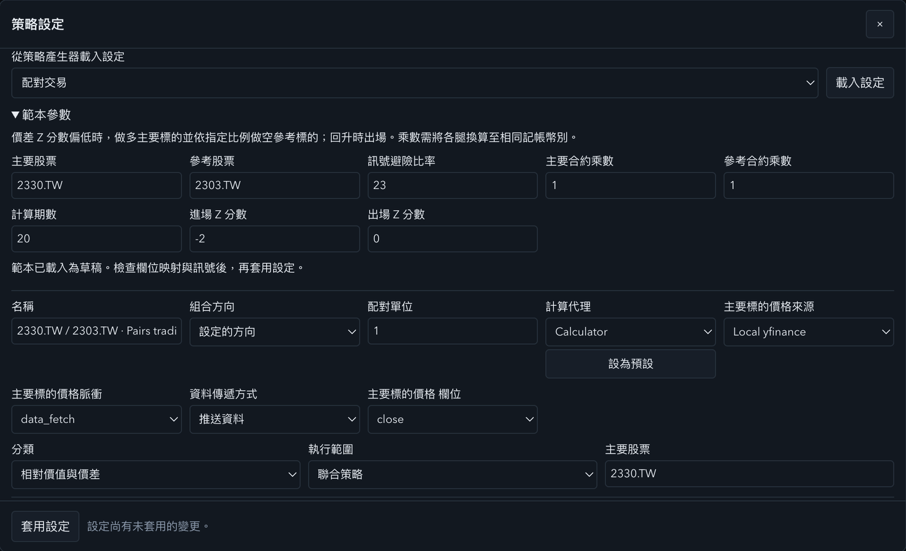
圖 2-2 載入「配對交易」範本：避險比率填 23 之後按「載入設定」。
2.4 範本參數（逐項說明）
這 8 個參數在 策略設定 → 從策略產生器載入設定 → 配對交易 → 範本參數。改完要按 載入設定，再按 套用設定 才會生效。每次打開策略設定時，這些欄位都會顯示預設值，不是目前使用的值（目前的值請看 計算項目 與 訊號），重新載入前請把每一欄都填好。
主要股票 Primary stock
- 意思
- 進場時買進的那一檔，也是避險價差裡被減的一方。
- 預設
- 目前策略的股票，例如
2330.TW。
- 怎麼填
- 上市股票用
.TW，上櫃用 .TWO；用富果資料時也可填期貨，例如 CDF.TAIFEX。不能有空格。
參考股票 Reference stock
- 意思
- 進場時賣出（做空）的那一檔。
- 預設
- 空白，一定要填，否則「載入設定」按不下去，並顯示「請填妥範本參數，再按「載入設定」。」
- 限制
- 不能和主要股票相同，否則會出現英文訊息「Reference instrument must differ from the selected primary instrument.」
- 注意
- 參考股票使用和主要股票相同的價格來源與價格欄位。
訊號避險比率 Signal hedge ratio
- 意思
- 一組配對裡，每 1 股主要股票要配幾股參考股票。它同時決定兩件事：
① 避險價差 = 主要加權值 − 避險比率 × 參考加權值；
② 模擬下單時參考股票的數量 = −避險比率 × 配對單位（例如 23 → 每組賣 23 股）。
- 預設／範圍
- 1；必須大於 0，最大 1,000,000。
- 怎麼設定
- 最簡單的方法是讓兩邊金額差不多：主要股票價格 ÷ 參考股票價格。2330 約 2,170、2303 約 92.40，比率約 23。
- 為什麼重要
- 避險比率維持 1 時，2303 的價格太小，避險價差幾乎就等於 2330 自己的價格，策略其實只在看 2330 的漲跌。改成 23 之後，價差才真正反映兩檔的相對變化，進出場時點也會完全不同（比較見 2.7 回測比較）。
- 注意
- 回測的「依進場價格平衡部位」不使用這個比率來決定數量，見 數量配置。
主要合約乘數、參考合約乘數 Primary / Reference contract multiplier
- 意思
- 把「一個單位」換算成價格單位的倍數。加權值 = 乘數 × 價格；損益 = 價格變動 × 數量 × 乘數。
- 預設／範圍
- 1；必須大於 0。
- 怎麼設定
- 股票配股票，兩個都維持 1（數量就是股數）。期貨的設定方式見 2.8 實例二。
計算期數 Calculation period
- 意思
- 計算 Z 分數時，用最近幾根 K 棒的平均與標準差（N）。
- 預設／範圍
- 20；整數 1–1,000。
- 怎麼設定
- 日 K 上 20 約一個月、60 約三個月。期數越短，Z 分數越敏感、訊號越多但雜訊也多；期數越長越穩定，訊號較少。策略要先累積 N 根 K 棒才會出現第一個訊號，所以回測期間至少要比 N 長很多。
進場 Z 分數 Entry z-score
- 意思
- 價差 Z 分數 小於或等於 這個值時，出現進場訊號。
- 預設
- −2。
- 怎麼設定
- 改成 −2.5 會更嚴格，進場次數較少、但每次價差更極端；改成 −1.5 進場較頻繁。
- 限制
- 必須小於 出場 Z 分數，否則載入時出現英文訊息「entry_zscore must be smaller than exit_zscore.」
出場 Z 分數 Exit z-score
- 意思
- 持有部位時，價差 Z 分數 大於或等於 這個值時，出現出場訊號。
- 預設
- 0（價差回到平均）。
- 怎麼設定
- 改成 −0.5 會較早出場（每次賺得少、持有時間短）；改成 0.5 會等價差回到平均以上才出場。
- 注意
- 範本沒有停損。出場訊號只有一個條件，若想改成依損益出場，可在 出場訊號 使用「損益 · 未平倉模擬部位」。
2.5 策略設定的其他欄位
範本參數下方是策略的完整設定。一般使用只要確認以下欄位，其餘維持範本帶入的值即可。
| 欄位 | 意思與設定 |
|---|
| 名稱 | 策略名稱，最多 160 字。預設是代碼加範本名稱，例如「2330.TW / 2303.TW · 配對交易」，可自行修改。 |
| 組合方向 | 設定的方向（預設）：進場買主要、賣參考。反向交易：每一腿的買賣對調（賣主要、買參考），但進出場條件不變，仍是 Z ≤ −2 進場。一般請維持預設；想做相反方向請看 2.1 的說明。 |
| 配對單位 | 模擬下單時每次的組數，必須大於 0，預設 1。每一腿的數量 = 配對單位 × 該腿的帶符號單位數（主要 1、參考 −避險比率）。回測不使用這個值，回測的數量見 數量配置。 |
| 計算代理、設為預設 | 負責計算的代理，維持 Calculator。「設為預設」會把它存成您帳戶的預設計算代理。 |
| 主要標的價格來源、脈衝、資料傳遞方式 | 價格從哪裡來。預設是 Local yfinance（您電腦上的本機 yfinance，免費，安裝方法見《使用指南》第 2 節）；存了富果金鑰可改 FugleDataSource（還沒有金鑰：富果行情 API 方案（合作推廣連結））。需要清單上沒有的資料來源，請寫信到 datasources@retis.ai。脈衝維持 data_fetch、傳遞方式維持「推送資料」。 |
| 主要標的價格 欄位 | 用哪一個價格：預設 close（收盤價）。adjustedClose（還原收盤價）可避免除權息造成的價差跳動，用在日、週、月 K，yfinance 與富果都支援。分鐘 K 不需要還原，用 close 即可。這個欄位同時用於兩檔，也是模擬成交與計算損益的價格。 |
| 分類 | 「相對價值與價差」，只是標籤，不影響計算。 |
| 執行範圍 | 配對交易必須是 聯合策略，兩檔才會被當成一組。 |
交易部位與損益計算
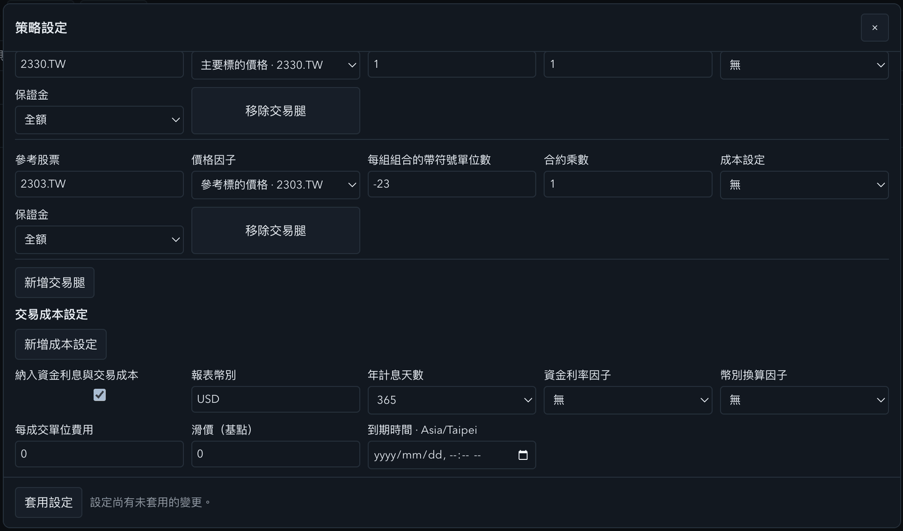
圖 2-3 每一腿的設定，以及勾選「納入資金利息與交易成本」後出現的欄位。
| 欄位 | 意思與設定 |
|---|
| 價格因子 | 這一腿用哪個價格成交與計價，維持範本的設定。 |
| 每組組合的帶符號單位數 | 一組配對裡這一腿的數量，正數買、負數賣。主要股票 1，參考股票 −避險比率（上圖 −23）。不能是 0。 |
| 合約乘數 | 同 合約乘數，必須大於 0。 |
| 成本設定 | 選一個「交易成本設定」套用在這一腿。按 新增成本設定 建立：計費基礎可選 成交金額百分比、每單位、每筆成交，收費方向可選 買賣皆收、買進、賣出，並可設每筆最低金額。例如台股手續費可設成「成交金額百分比、買賣皆收」，證交稅設成「成交金額百分比、賣出」，數字請依您的券商與實際稅率填寫。 |
| 保證金 | 全額、成交金額百分比 或 每單位。只影響回測「報酬率」的分母（占用資金），不影響損益。 |
| 納入資金利息與交易成本 | 勾選後才會出現下列欄位，預設不勾（不計費用）。 |
| 報表幣別 | 損益顯示的幣別標籤，預設 USD，台股可改成 TWD。只是標籤，不換算。 |
| 年計息天數 | 360 或 365，計算資金利息用。 |
| 資金利率因子 | 提供年利率（小數）的計算項目。利息依兩腿合計的淨名目金額計算；沒有另外的融券費用。一般維持「無」。 |
| 幣別換算因子 | 兩腿以不同幣別計價時用的匯率項目。台股配台股維持「無」。 |
| 每成交單位費用 | 每成交一個單位收的固定費用，進場與出場各收一次，按所有腿的數量合計。例如避險比率 23、1 組，每次成交 24 個單位。 |
| 滑價（基點） | 0–1,000。成交價對您不利的幅度：買進加價、賣出減價，1 基點 = 0.01%。 |
| 到期時間 | 期貨用。到期後停止進場、出現出場訊號，回測會自動平倉。換月時請先平倉再改用下一期合約。 |
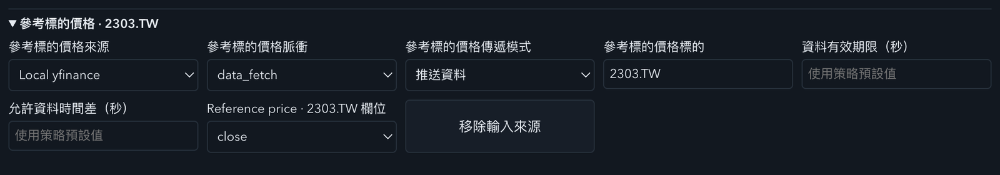
圖 2-4 「主要標的價格」與「參考標的價格」各有一個區塊。
| 欄位 | 意思與設定 |
|---|
| 參考標的價格標的 | 參考股票代碼。在這裡修改也會一併改掉對應那一腿的標的。 |
| 資料有效期限（秒） | 最新一筆價格超過這個秒數就算「資料已過期」，該時點不能用來判斷訊號或下單。留白使用策略預設值 120 秒。日 K 的情況：當天的 K 棒還沒收盤時算是最新；收盤後超過 120 秒就會過期，所以盤後與隔天開盤前、資料來源還沒出現今天的 K 棒時，畫面會顯示「資料已過期」（見 圖 2-7）。 |
| 允許資料時間差（秒） | 兩檔最新價格的時間最多可以相差幾秒，超過就不能用。留白使用預設值 30 秒。兩個資料來源的時間標記不同時（例如股票配期貨），可能需要放寬，並把計算項目的對齊方式改成「當時最後可用值」。 |
| 欄位 | 同 價格欄位。 |
| 新增資料輸入 | 進階用途：加入第三個價格或指標，供自訂計算項目或訊號使用。 |
計算項目
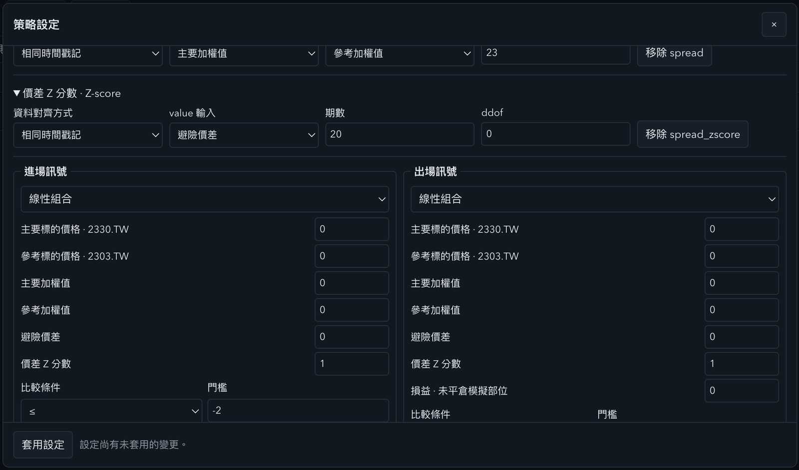
圖 2-5 範本帶入的四個計算項目。這裡的「避險比例」與「期數」就是範本參數的值。
- 主要加權值、參考加權值（線性組合）：價格 × 乘數。「權重」就是合約乘數，「bias」是常數項（維持 0）。
- 避險價差（Hedged price spread）：x 輸入 − 避險比例 × y 輸入。
- 價差 Z 分數（Z-score）：「期數」即計算期數；
ddof 0 表示母體標準差，1 表示樣本標準差，必須小於期數。
- 資料對齊方式：「相同時間戳記」（預設）只在兩檔都有同一時間的價格時計算；「當時最後可用值」用各自最近一筆價格補齊。
改參數請用「載入設定」。範本載入之後，計算項目的「避險比例／權重」和交易部位的「帶符號單位數／合約乘數」是分開的：在這裡改避險比例，下單數量不會跟著改，反之亦然。要改避險比率，請回到範本參數修改後重新 載入設定，兩邊才會一致。
進場訊號與出場訊號
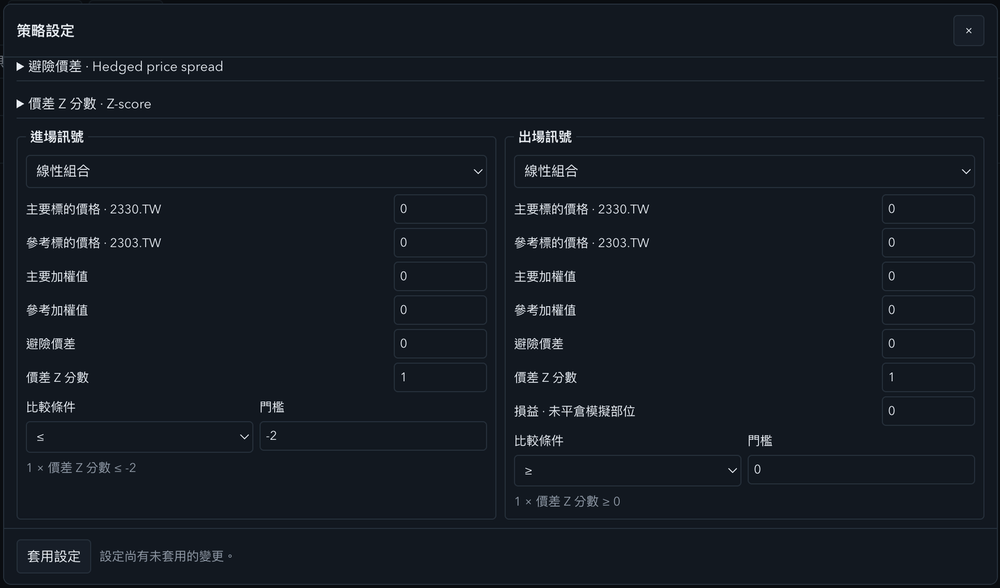
圖 2-6 訊號 = Σ（權重 × 因子），再和門檻比較。範本只把價差 Z 分數的權重設成 1。
- 模式：配對交易的訊號以「線性組合」顯示：每個因子一個權重，訊號值 = 所有「權重 × 因子」相加。權重為 0 的因子不參與。
- 比較條件：<、≤、>、≥、=，以及「向上穿越」（上一根 ≤ 門檻且這一根 > 門檻）、「向下穿越」（上一根 ≥ 門檻且這一根 < 門檻）。
- 門檻：即範本的進場／出場 Z 分數。
- 出場訊號多一個因子「損益 · 未平倉模擬部位」：例如把它的權重設 1、價差 Z 分數權重設 0、條件「≤」、門檻 −500，就變成「虧損 500 時出場」。但出場只能有一個條件，這樣做就不再依 Z 分數出場。
2.6 執行與模擬下單
在配對分頁（例如 2330.TW / 2303.TW）按 啟動。策略約每 2 分鐘取得一次最新價格、重算最近一段 K 棒並判斷訊號；每一步 10 點。策略不會自己下單，訊號成立時由您按 下單。
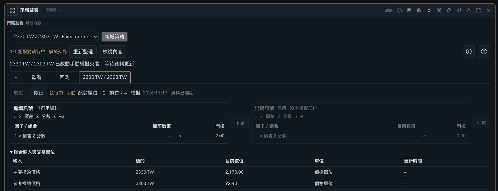
圖 2-7 開盤前資料來源還沒有今天的 K 棒，前一天的 K 棒已收盤超過 120 秒，所以顯示「資料已過期」、訊號「無可用資料」。
下單 只有在以下條件全部成立時才能按：策略執行中、目前沒有模擬部位、資料是最新的、進場訊號成立且出場訊號不成立。
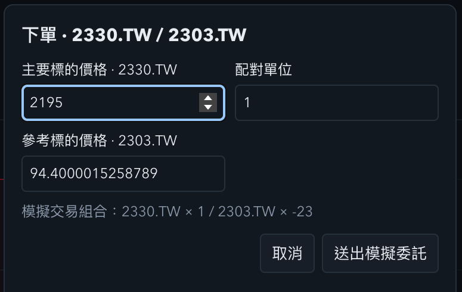
圖 2-8 模擬委託單。價格預設為最新價格，配對單位預設為策略設定的值，都可以修改。
- 主要標的價格、參考標的價格：模擬成交價，預設為最新價格（參考價格可能顯示很長的小數，不影響計算）。
- 配對單位：這次下幾組。每一腿的數量 = 配對單位 × 帶符號單位數，畫面下方的「模擬交易組合」會顯示，例如「2330.TW × 1 / 2303.TW × -23」。
- 按 送出模擬委託 成交；按 取消 不交易。每次下單 10 點。
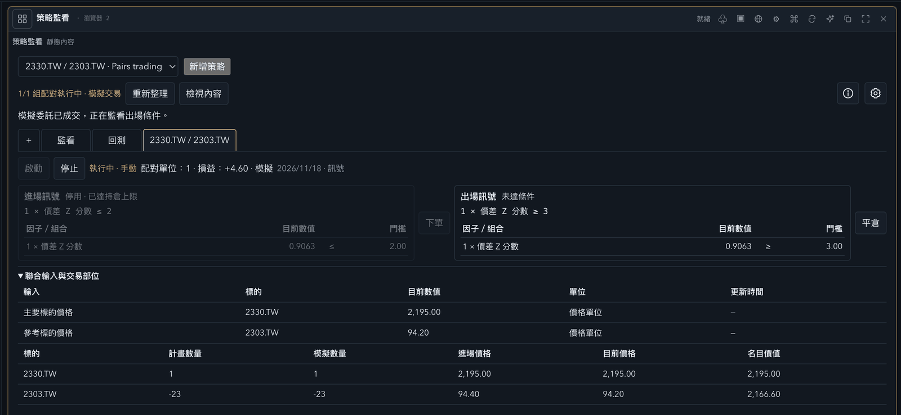
圖 2-9 持有一組部位：2330 買 1 股 @ 2,195，2303 賣 23 股 @ 94.40。
- 損益 = Σ（目前價格 − 進場價格）× 模擬數量 × 合約乘數。上圖：2330 沒變，2303 從 94.40 跌到 94.20，（94.20 − 94.40）× (−23) = +4.60。
- 每組配對同時只能有一個部位，持有時進場訊號顯示「停用 · 已達持倉上限」；沒有部位時出場訊號顯示「停用 · 沒有模擬部位」。
- 平倉：按 平倉 打開同樣的委託單，可只平部分組數，按 平倉指定數量。每次 10 點。
- 停止：停止定時執行，模擬部位保留，不扣點。關掉畫面不會停止執行。
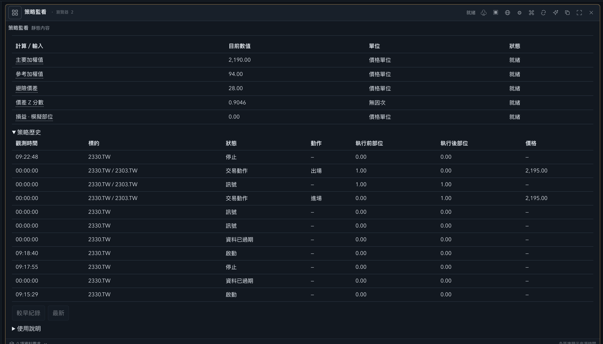
圖 2-10 「策略歷史」記錄每次啟動、停止、訊號、進場與出場。日 K 的觀測時間顯示為該 K 棒的時間（00:00:00）。
2.7 回測配對策略
回測用過去的價格重跑同一套計算與訊號。每次 5 點。基本操作見《使用指南》第 7.5 節；以下是配對交易特有的部分。
數量配置
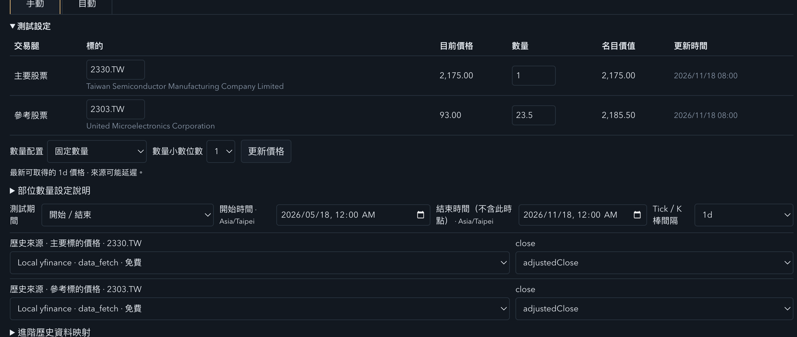
圖 2-11 回測的「測試設定」。主要股票數量預設 1，參考股票數量依「數量配置」決定。
| 選項 | 參考股票的數量 |
|---|
| 依進場價格平衡部位（預設） | 每次進場時重新計算，讓兩邊金額相等：主要數量 × 主要價格 × 主要乘數 ÷（參考價格 × 參考乘數），四捨五入到「數量小數位數」。不使用訊號避險比率；避險比率只影響訊號。 |
| 固定數量 | 使用您填的數量，每次進場都一樣。切換時會先帶入目前的數量（圖中 23.5），可自行修改；改任一數量也會自動切成固定數量。 |
- 數量小數位數：0–6，預設 1。股票想用整股可改 0。
- 配對單位 不影響回測；主要股票數量在這裡設定。
- 成交假設：以觸發訊號那一根 K 棒的價格成交（有設定滑價時加上滑價）；同一時間只有一個部位；同一根 K 棒先判斷出場、再判斷進場；期間結束時還沒平倉的部位以最後價格估值。
- 資料上限：兩檔合計最多 10,000 筆價格，也就是每檔約 5,000 根 K 棒。
避險比率對回測的影響
同樣是 2330.TW / 2303.TW、2026/5/18 – 2026/11/17、日 K，只改避險比率與數量配置：
| 設定 | 總損益 | 報酬率（%） | 已平倉交易數 | 勝率 | 最大回撤 |
|---|
| 避險比率 1、依進場價格平衡部位 | +266.24 | +5.8 | 3 | 66.67% | 171.56 |
| 避險比率 23、依進場價格平衡部位 | −86.51 | −1.7 | 2 | 50.0% | 573.99 |
| 避險比率 23、固定數量（參考 23.5 股） | −69.93 | −1.1 | 2 | 50.0% | 745.49 |
避險比率 1 的結果看起來比較好，但它的價差幾乎只是 2330 的價格，訊號其實是「2330 比自己過去 20 天便宜時買」，不是真正的配對。避險比率 23 才是在比較兩檔，進出場時點完全不同。回測結果好不好，要先確認策略真的在做您想做的事。以上只是示範，不代表未來。
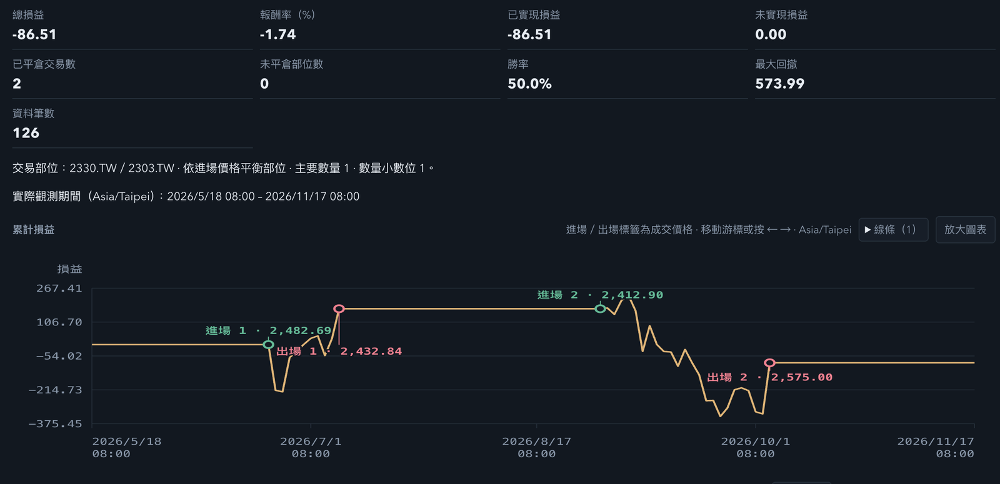
圖 2-12 避險比率 23 的回測結果。
結果怎麼看（配對交易的細節）
| 結果 | 計算方式 |
|---|
| 總損益 | 已實現損益 + 未實現損益（未平倉部位以最後價格估值），已扣除設定的費用與滑價。 |
| 報酬率（%） | 總損益 ÷ 期間內占用資金的最高值。占用資金 = 兩腿「數量 × 價格 × 乘數」的絕對值相加（有設定保證金時改用保證金）。 |
| 勝率 | 獲利（損益 > 0）的已平倉交易 ÷ 全部已平倉交易；打平也算在分母裡。 |
| 最大回撤 | 累計損益（含未實現）從最高點往下跌的最大幅度，起點為 0。 |
自動回測
自動回測在一段期間內隨機抽出多個起點與長度，各跑一次回測，用來檢查策略是不是只在某一段期間有效。
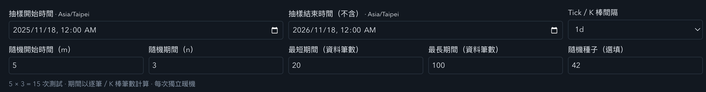
圖 2-13 自動回測的設定。
| 欄位 | 預設 | 意思與限制 |
|---|
| 抽樣開始時間、抽樣結束時間（不含） | 最近 365 天 | 從這段期間內抽樣。 |
| 隨機開始時間（m） | 5 | 抽幾個不同的起點，1–100。 |
| 隨機期間（n） | 3 | 抽幾種不同的長度，1–100。總測試數 = m × n，最多 400。 |
| 最短期間、最長期間（資料筆數） | 20、100 | 每次測試的長度範圍（K 棒數）。n 不能超過「最長 − 最短 + 1」；m × n × 最長期間不能超過 250,000。 |
| 隨機種子（選填） | 空白 | 填同一個數字，抽到的期間與結果完全相同，方便比較設定；留白則每次由系統決定並顯示在結果上。 |
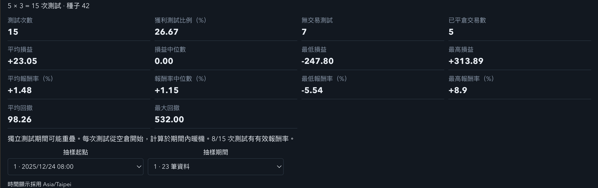
圖 2-14 自動回測摘要（避險比率 23，種子 42）。
- 獲利測試比例：損益大於 0 的測試占全部測試的比例。上例 26.67%，而且有 7 次完全沒有交易，表示這組設定在多數期間沒有機會或沒有獲利。
- 平均、中位數、最低、最高：損益、報酬率與回撤在各次測試間的分布。每次測試都從空倉開始、在期間內暖機，不會累加；各次測試的期間可能重疊。
- 個別測試：下方表格列出每次測試的起訖、交易數、損益與回撤。目前 tw-001 上，保存在 Terminal 的策略還不能點進「檢視測試」看單次明細（畫面會顯示一行英文說明）。
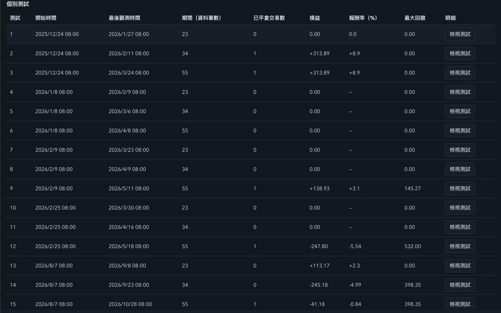
圖 2-15 自動回測的個別測試。
2.8 實例
實例一：台積電對聯電（2330.TW / 2303.TW）
- 按 試用範例：2330.TW / 2303.TW 配對交易。
- ⚙ 策略設定 → 載入「配對交易」→ 參考股票
2303.TW、訊號避險比率 23（約為 2330 ÷ 2303 的價格比），其餘預設 → 載入設定 → 套用設定。
- 回測：最近 6 個月、
1d，先用「依進場價格平衡部位」，再試「固定數量」；用 線條 加上「價差 Z 分數」，看進出場點是否落在 −2 與 0 附近。
- 想看更穩定的結果，可試計算期數 60、進場 −2.5；每改一次就重新回測，並用 自動回測（固定種子）比較。
- 開盤時間按 啟動，等進場訊號成立再 下單；不用時按 停止。
實例二：台積電現貨對台積電期貨
先在 終端設定 → 資料來源 存入富果金鑰（期貨資料需要的富果方案見文末的 合作夥伴說明）。新增策略：範本 配對交易、主要股票 2330.TW、參考股票 CDF.TAIFEX（台積電期貨，近月連續）、價格來源 FugleDataSource。
價格欄位請保持 close：期貨沒有還原價，現股用還原價會讓價差因股利失真。策略設定的「主要標的價格 欄位」預設就是 close；回測時，現貨對期貨的配對每一腿的歷史來源欄位也預設為 close（兩檔都是股票時才預設 adjustedClose）。請不要改成 adjustedClose。
- 以每股計價最簡單：兩個合約乘數都填 1、避險比率 1，避險價差就是「現貨 − 期貨」（基差），Z 分數衡量基差是否異常。損益單位是「每股」。
- 想看一口期貨的損益：股票期貨一口通常對應 2,000 股（請以 臺灣期貨交易所 公告的契約規格為準）。模擬下單時把配對單位設為 2,000，回測時把主要股票數量設為 2,000，兩邊都以 2,000 股計算。
- 換月跳動：近月連續序列在每月換月時價格會跳動，可能讓價差與 Z 分數突然改變、造成不真實的訊號。還原收盤價處理的是股票除權息，不會消除期貨換月的跳動。可設定 到期時間，到期前平倉。
- 時間對齊：若兩邊的價格時間標記不同而算不出價差，可放寬 允許資料時間差，並把計算項目的對齊方式改成「當時最後可用值」。
- 富果的資料是您與富果之間的用量，不扣 Retis 的資料點數；回測 5 點、執行每一步 10 點不變。
2.9 常見問題
| 狀況 | 原因與處理 |
|---|
| Z 分數一直是「—」或「計算暖機中」 | 還不滿 計算期數 根 K 棒，或其中一檔在某些時間沒有價格。縮短期數、拉長回測期間，或檢查兩檔代碼是否正確。 |
| 執行中顯示「資料已過期」、訊號「無可用資料」 | 日 K 收盤後超過 資料有效期限。開盤後等資料來源出現當天的 K 棒即可。盤後想試用下單，可暫時把資料有效期限調大（例如 172,800 秒 = 2 天），但此時訊號是用前一天的收盤價判斷，用完請改回留白。 |
| 「下單」按不下去 | 需要同時符合：執行中、沒有部位、資料最新、進場訊號成立、出場訊號不成立。 |
| 按「+」新增配對後，下單數量不對 | 新增的配對會把參考那一腿的帶符號單位數重設為 −1、乘數重設為 1，但計算項目的避險比例不變。請到策略設定重新載入範本，讓兩邊一致。 |
| 回測的參考股票數量和即時下單不同 | 回測預設「依進場價格平衡部位」，不使用避險比率；即時下單一律用 −避險比率 × 配對單位。想一致，回測改用「固定數量」並填入避險比率。 |
| 改成「反向交易」後結果很奇怪 | 反向交易只對調買賣，不改進出場條件，見 組合方向。 |
| 出現「此策略監看已滿」或黃色的空間提示 | 每個策略監看約可保存 40 到 50 個策略與它們的回測，每個策略最多 20 份已儲存的回測。用策略清單旁的 刪除策略，或回測分頁 下載報告 旁的 刪除已儲存的回測，刪掉不需要的項目再試。 |
| 「載入設定」顯示英文錯誤 | 常見的有「entry_zscore must be smaller than exit_zscore.」（進場 Z 分數要小於出場）與「Reference instrument must differ from the selected primary instrument.」（兩檔不能相同）。 |
第 3 章 單一股票策略的共同操作
第 4 到第 10 章的七個範本都是「單一股票」策略：每檔股票各自計算、各自進出場，只做多。它們的建立、設定、執行與回測方式相同，先在這一章說明，各章只講自己的計算與參數。
3.1 建立與載入範本
- 按 新增策略，範本 選要用的範本，填 主要股票（例如
2330.TW）、選價格來源、填 名稱（可不填，預設為「代碼 · 範本名稱」），按 建立。範本的參數此時都是預設值。
- 要改參數：⚙ 策略設定 → 從策略產生器載入設定 選同一個範本 → 修改 範本參數 → 載入設定 → 套用設定。策略執行中請先停止，見 2.9。
範本參數每次都顯示預設值。再次打開策略設定時，「範本參數」欄位會回到預設值，不是您目前使用的值；目前的值請看下方的「計算項目」與「進場訊號／出場訊號」。如果只想改一個參數，請把其他參數也重新填好再按「載入設定」，否則會被改回預設值。
3.2 單一股票策略的設定欄位
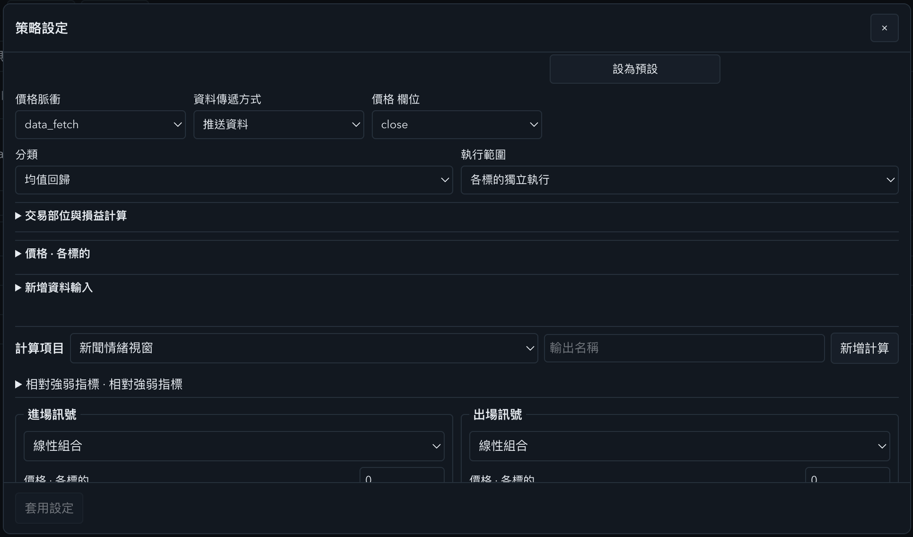
圖 3-1 單一股票策略的策略設定（部分）。
和 配對交易的設定 大致相同，差別如下：
| 欄位 | 單一股票策略的意思 |
|---|
| 交易方向 | 做多（範本預設）或 放空。改成放空時，進出場條件不變，只是訊號成立時改為賣出。這些範本是為做多設計的，一般請維持做多。 |
| 數量 | 模擬下單時預設的股數，必須大於 0，預設 1。回測不使用這個值，回測每次進場固定 1 股。 |
| 執行範圍 | 各標的獨立執行：每檔股票各自計算、各自持有部位。 |
| 價格 · 各標的 | 所有股票共用的價格設定：資料有效期限（秒）、允許資料時間差（秒）；VWAP 範本另有「成交量 欄位」。 |
| 交易部位與損益計算 | 只有「每成交單位費用」與「滑價（基點）」會用到，見 2.5。 |
| 計算項目 | 範本帶入的指標，標題像「快速 EMA · EMA」（後半是計算代理的英文名稱）。部分參數名稱（例如 offset、mode）尚未翻譯。 |
3.3 執行與模擬下單
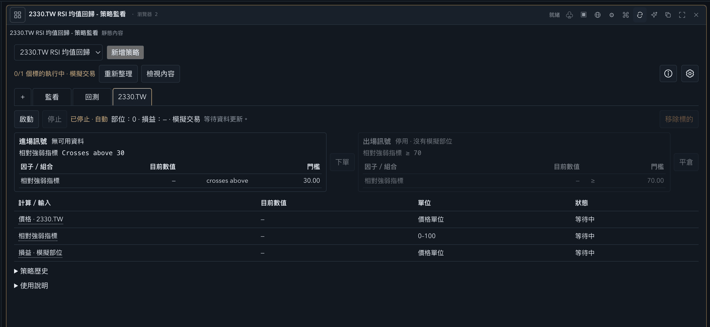
圖 3-2 每檔股票一個分頁，例如 RSI 策略的 2330.TW 分頁。
- 每檔股票一個分頁，各自有 啟動／停止、部位、訊號與「計算／輸入」表。
- 即時監看一律使用日 K。策略約每 2 分鐘取得一次最新價格（每一步 10 點），計算的是日 K 指標。盤後與開盤前，前一天的 K 棒已收盤，會顯示「資料已過期」，見 圖 2-7。
- 下單 的條件：執行中、沒有部位、資料最新、進場訊號成立且出場訊號不成立。委託單標題為「下單 · 2330.TW」，可改 價格 與 數量，下方顯示「2330.TW · 做多 · 目前價格 … · 模擬」。每檔同時只能有一個部位。
- 平倉 可只平部分數量，也可以在出場訊號還沒成立時就平倉。
- 損益 =（目前價格 − 進場價格）× 數量。
- 「+」新增標的：可在同一個策略加入其他股票（每個策略最多 100 檔，新增前不能有部位）。每一檔都有自己的分頁、啟動與停止，也各自取得價格。
3.4 回測
- 每次進場固定 1 股，以觸發訊號那一根 K 棒的價格成交；同一時間只有一個部位；期間結束時還沒平倉的部位以最後價格估值（列在「未平倉部位數」與「未實現損益」）。
- 預設期間太短。預設是最近 30 天（日 K 約 21 根），而且開始日之前不會多抓資料暖機。均線、通道等指標要先累積幾十根 K 棒才有值，所以請把 測試期間 改成最近 6 個月到 1 年。
- 標的代碼：策略有多檔股票時，一次回測一檔。
- Tick／K 棒間隔：一般用
1d。yfinance 的分鐘 K 只有最近 30 天（1 分 K）或 60 天（其他分鐘 K）。
- 報酬率 = 總損益 ÷ 占用資金（1 股 × 價格）。因為只買 1 股，報酬率比總損益更適合拿來比較不同股票。
- 圖表預設只畫「總損益」；按 線條 可加上價格與各範本的指標線，本手冊的範例圖都這樣做。
範例數字說明：以下各章的回測都在 2026 年 11 月 18 日於 tw-001 執行，期間為 2025/11/18 – 2026/11/17、日 K（VWAP 為 5 分 K），使用範本預設參數，價格來自本機 yfinance，日 K 用還原收盤價（adjustedClose）。只用來說明圖表怎麼看，不代表策略好壞，也不是投資建議。
第 4 章 移動平均線交叉
4.1 是什麼、何時用
用兩條指數移動平均線（EMA）判斷趨勢：短期的「快速 EMA」向上穿越長期的「慢速 EMA」，代表近期價格開始走強，進場做多；向下穿越時出場。
| 適合 | 不適合 |
|---|
| 有明顯、持續的上漲或下跌趨勢的股票。 | 上下震盪、沒有方向的行情：兩條線會反覆交叉，造成多次小虧損。 |
4.2 怎麼算
- 慢速 EMA 要累積 N 根（預設 50）才有第一個值，第一個可能的進場在第 51 根之後。
- 「穿越」需要前一根也算得出來。若慢速 EMA 剛有值時快線已經在慢線之上，這不算一次穿越，要等下一次真正交叉。
4.3 範本參數
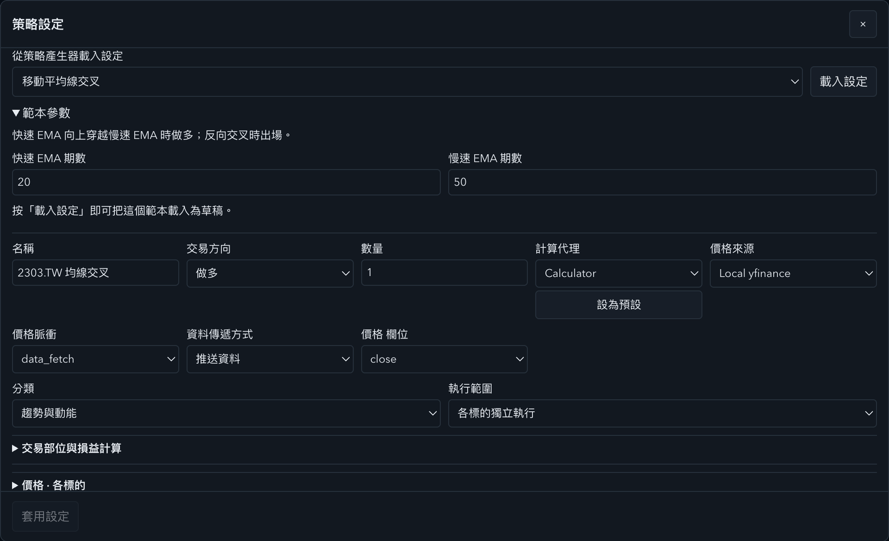
圖 4-1 移動平均線交叉的範本參數。
快速 EMA 期數 Fast EMA period
- 意思
- 短期均線用幾根 K 棒。
- 預設／範圍
- 20；整數 1–1,000。必須小於慢速 EMA 期數，否則出現英文訊息「fast_period must be smaller than slow_period.」
- 怎麼設定
- 越小越靈敏、交叉越頻繁。常見組合：5／20（短線）、20／50（預設）、50／200（長線）。
慢速 EMA 期數 Slow EMA period
- 意思
- 長期均線用幾根 K 棒，代表較長期的趨勢。
- 預設／範圍
- 50；整數 1–1,000。
- 怎麼設定
- 越大越穩定、訊號越少，但進出場也越晚。回測期間至少要比它長很多（日 K 50 期建議 1 年）。
即時計算表與圖表的線條：價格 · 代碼、快速 EMA、慢速 EMA、損益 · 模擬部位。
4.4 回測範例：聯電（2303.TW）
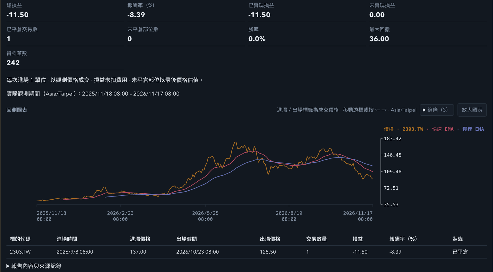
圖 4-2 一年只有一次交易：9/8 快線向上穿越慢線進場，10/23 向下穿越出場，虧損 11.50。
2303 在 2026 年上半年大漲，但快線在慢線剛開始有值時就已經在上面，沒有出現「穿越」，所以錯過了這段漲勢；之後在高檔震盪時進出一次，小虧出場。這正是均線交叉的特性：它只在交叉發生時動作，進出場都比價格晚一步。
4.5 小提醒
- 想要更早進場，可縮短兩個期數（例如 10／30），但震盪時會更常被洗出場。
- 可搭配 布林通道 或 RSI 判斷目前是趨勢還是震盪，再決定用哪個策略。
第 5 章 動能
5.1 是什麼、何時用
看最近一段期間的漲幅：漲幅超過「進場報酬率」就進場，跌回「出場報酬率」以下就出場。背後的想法是「強者恆強」，漲得多的股票短期內常會繼續漲。
| 適合 | 不適合 |
|---|
| 有持續上漲趨勢的股票；想追隨強勢股。 | 急漲急跌、沒有延續性的股票：容易買在高點。 |
5.2 怎麼算
- 這兩個條件看的是「水準」，不是穿越：只要報酬率一直大於門檻，進場訊號就一直成立。
- N 以 K 棒計算，日 K 的 20 約一個月。第 N + 1 根之後才有值。
5.3 範本參數
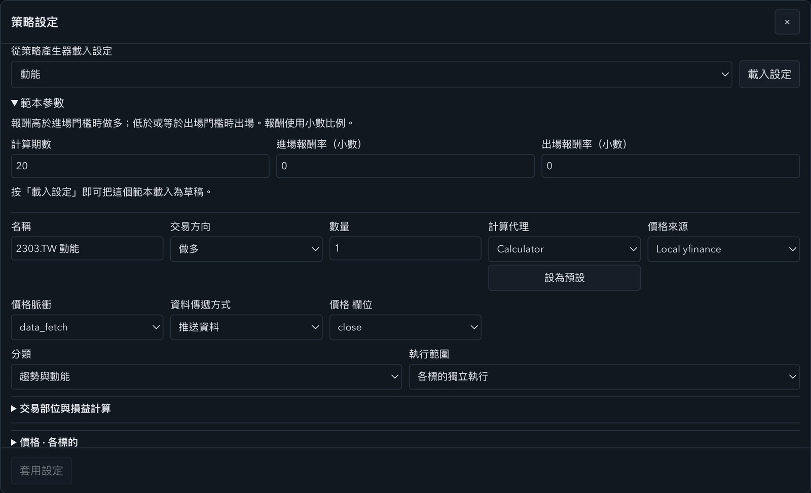
圖 5-1 動能的範本參數。報酬率用小數填寫。
計算期數 Calculation period
- 意思
- 和幾根 K 棒前的價格比較。
- 預設／範圍
- 20；整數 1–1,000。
- 怎麼設定
- 短期動能用 5–20，中期用 60（約三個月）、長期用 120–250。
進場報酬率（小數） Entry return (fraction)
- 意思
- 期間漲幅超過多少才進場，用小數表示：0.05 = 5%，0.1 = 10%。填 5 會被當成 500%。
- 預設
- 0（只要上漲就進場）。
- 限制
- 必須大於或等於出場報酬率，否則出現英文訊息「entry_return must be at least exit_return.」
- 怎麼設定
- 建議設高一點，例如 0.05，只追真正強勢的走勢。
出場報酬率（小數） Exit return (fraction)
- 意思
- 期間漲幅跌到多少（含）以下就出場。
- 預設
- 0。
- 怎麼設定
- 進場與出場都是 0 時，報酬率在 0 附近上下跳動就會反覆進出。把進場設 0.05、出場維持 0，中間的緩衝可減少來回交易。
即時計算表與圖表的線條：價格 · 代碼、價格報酬率（小數比率）、損益 · 模擬部位。
5.4 回測範例：聯電（2303.TW）
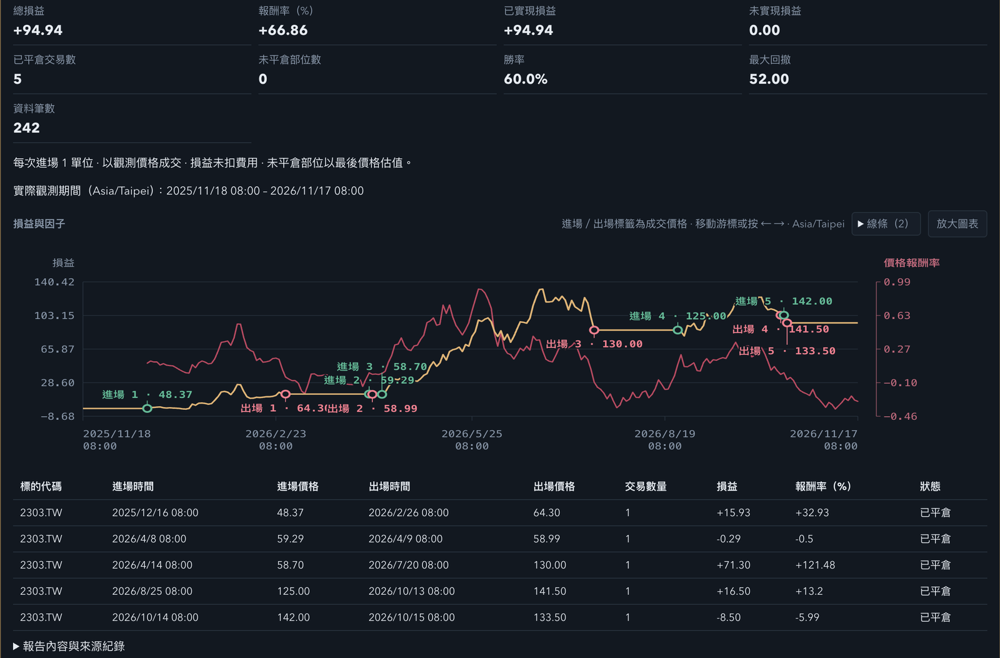
圖 5-2 預設參數（期數 20、進出場 0）：5 次交易，抓到了 2303 上半年的大漲。
2303 這一年從約 49 元一度漲到 180 元以上，動能策略在上漲途中進場並一路持有，5 次交易中 3 次獲利，總損益 +94.94（1 股）。在這種單邊大漲的股票上，動能策略表現最好；同一檔股票在 均線交叉 卻幾乎沒抓到。
5.5 小提醒
- 報酬率是小數，0.05 才是 5%。
- 動能策略在趨勢反轉時常會晚一步出場；可把出場報酬率設成略高於 0（例如 0.02）提早出場。
第 6 章 通道突破
6.1 是什麼、何時用
收盤價突破過去一段期間的最高收盤價時進場（突破盤整），跌破過去較短期間的最低收盤價時出場。這是經典的「海龜交易」做法。
| 適合 | 不適合 |
|---|
| 盤整一段時間後向上突破的股票；趨勢行情。 | 假突破多的股票：突破後馬上跌回，會被反覆停損。 |
6.2 怎麼算
- 通道只用收盤價（價格欄位），不是盤中最高價與最低價。
- 不含今天，所以今天的價格才有機會「突破」通道。要等兩個期數中較長者再加 1 根才有訊號。
6.3 範本參數
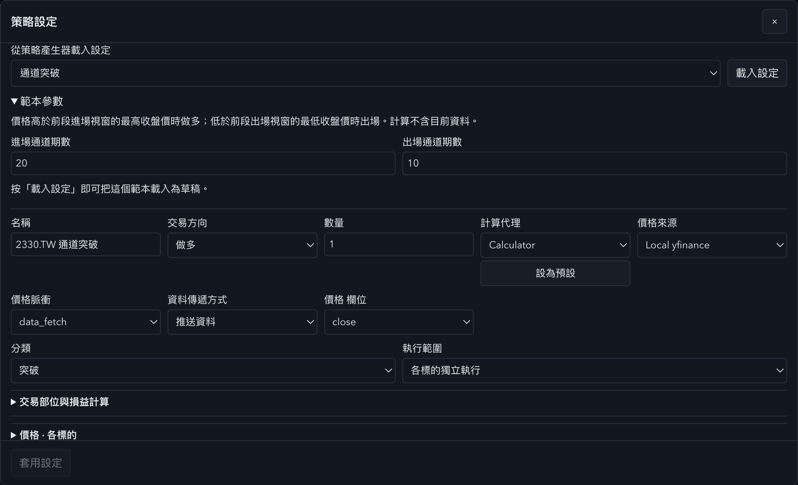
圖 6-1 通道突破的範本參數。
進場通道期數 Entry channel period
- 意思
- 突破過去幾根 K 棒的最高收盤價才進場。
- 預設／範圍
- 20；整數 1–1,000。
- 怎麼設定
- 越長越嚴格（突破更長期的高點），訊號較少但較可靠。常用 20 或 55。
出場通道期數 Exit channel period
- 意思
- 跌破過去幾根 K 棒的最低收盤價就出場。
- 預設／範圍
- 10；整數 1–1,000。通常設得比進場短，讓出場比進場敏感。
- 怎麼設定
- 越短越快停損、但也越容易在正常回檔時被洗出場。
即時計算表與圖表的線條：價格 · 代碼、進場通道、出場通道、損益 · 模擬部位。
6.4 回測範例：台積電（2330.TW）
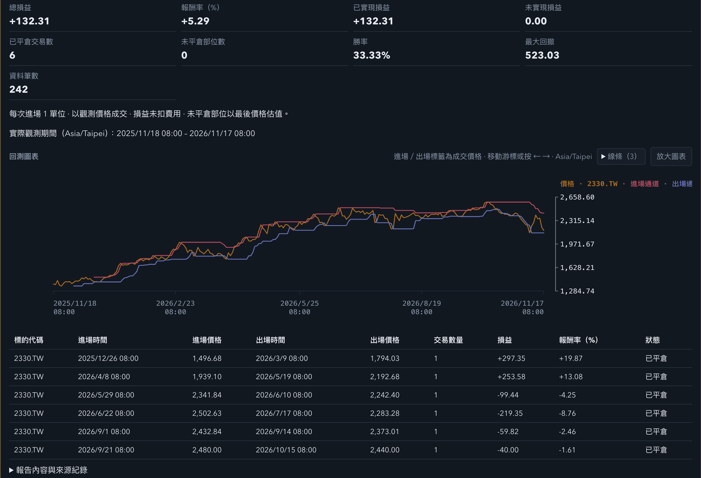
圖 6-2 6 次交易，勝率 33.33%，總損益 +132.31（1 股），最大回撤 523。
勝率只有三分之一，但仍是獲利：通道突破的特色是小虧多次、大賺少次。例如第一次交易 1,496.68 進場、1,794.03 出場賺約 297，抵掉了幾次突破失敗的虧損。回撤 523 表示中間曾經從高點回吐不少，使用前要能承受。
6.5 小提醒
- 勝率低是正常的，請一起看總損益與最大回撤。
- 想減少假突破，可加長進場通道（例如 55），或改用 波動收斂突破，只在波動很小之後的突破才進場。
第 7 章 RSI 均值回歸
7.1 是什麼、何時用
RSI（相對強弱指標）衡量最近漲跌的力道，介於 0–100。低於 30 通常稱為「超賣」。策略在 RSI 從超賣區回升、向上穿越 30 時進場，等 RSI 到 70（「超買」）以上時出場，賭價格會回到平常的水準。
| 適合 | 不適合 |
|---|
| 在一個區間內來回震盪的股票。 | 持續下跌的股票：RSI 可能多次回升又再跌，買進後一直到不了 70；持續上漲的股票：RSI 很少跌破 30，幾乎沒有訊號。 |
7.2 怎麼算
- 第 N + 1 根才有第一個 RSI，第一個可能的進場在第 N + 2 根。
7.3 範本參數
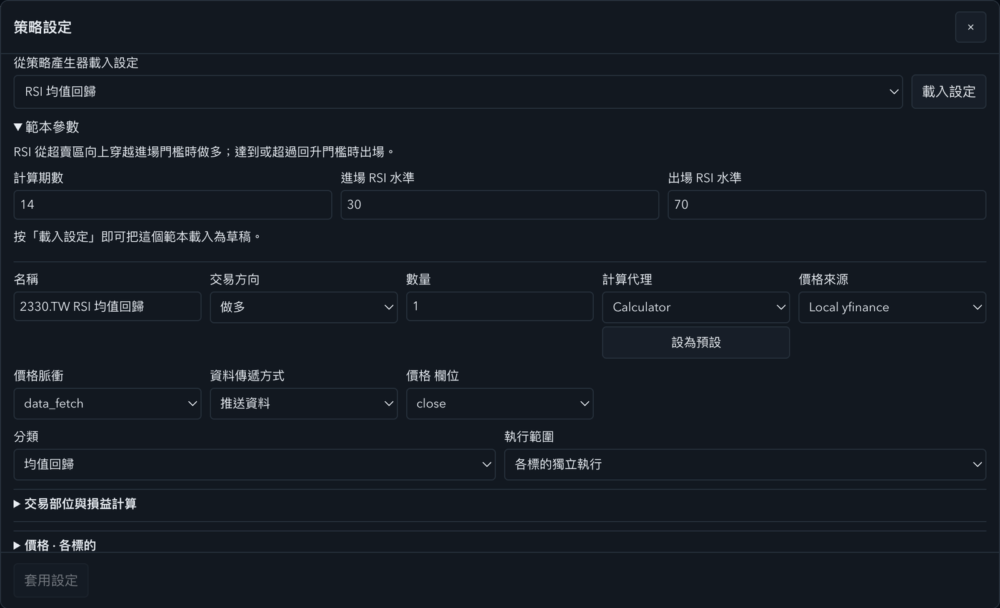
圖 7-1 RSI 均值回歸的範本參數。
計算期數 Calculation period
- 意思
- RSI 用幾根 K 棒的平均漲跌。
- 預設／範圍
- 14；整數 1–1,000。
- 怎麼設定
- 14 是最常見的設定。改成 6–9 更敏感，更常碰到 30 與 70；改成 20 以上更平滑、訊號更少。
進場 RSI 水準 Entry RSI level
- 意思
- RSI 從下往上穿越這個值時進場。
- 預設／範圍
- 30；0–100。必須小於出場水準，否則出現英文訊息「entry_level must be smaller than exit_level.」
- 怎麼設定
- 改成 20 更嚴格（只買極度超賣）；改成 40 訊號較多。
出場 RSI 水準 Exit RSI level
- 意思
- RSI 大於或等於這個值時出場。
- 預設／範圍
- 70；0–100。
- 怎麼設定
- 改成 50–60 會較早出場、較容易達成；70 以上要等較強的反彈。
即時計算表與圖表的線條：價格 · 代碼、相對強弱指標（單位 0–100）、損益 · 模擬部位。
7.4 回測範例：台積電（2330.TW）
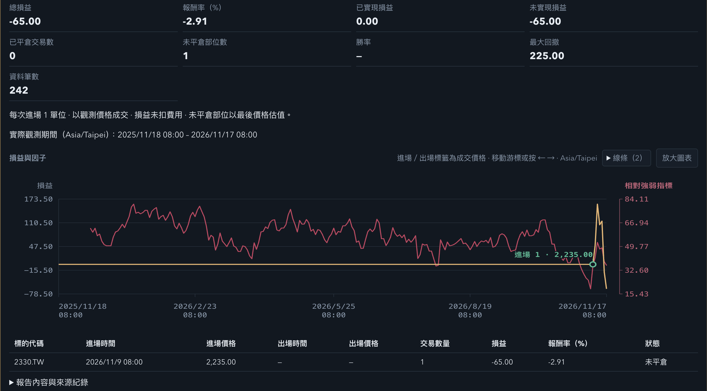
圖 7-2 一年內只有一次進場（11/9），到期間結束時 RSI 還沒到 70，部位仍未平倉，未實現損益 −65。
2330 這一年大致向上，RSI 很少跌到 30 以下，所以幾乎沒有訊號；唯一一次進場後股價繼續走弱，到期間結束都沒等到出場條件。這說明了均值回歸策略的兩個特性：在趨勢市場訊號很少，以及進場後可能長時間等不到出場。
7.5 小提醒
- 範本沒有停損。若擔心一直套住，可在 出場訊號 改用「損益 · 未平倉模擬部位」設定虧損出場，或自行用 平倉。
- 選股票時先看它是否在區間內震盪，可搭配 布林通道 判斷。
第 8 章 布林通道均值回歸
8.1 是什麼、何時用
布林通道由中軌（移動平均）與上下軌（中軌 ± 幾倍標準差）組成，大部分時間價格會在通道內。策略在價格跌破下軌後、又向上穿回下軌時進場，回到中軌以上時出場。
| 適合 | 不適合 |
|---|
| 在區間內震盪、偶爾短暫跌深的股票。 | 開始下跌趨勢的股票：可能穿回下軌後又繼續跌，遲遲到不了中軌。 |
8.2 怎麼算
- 第 N 根才有通道，第一個可能的進場在第 N + 1 根。
- 如果價格在一根 K 棒內從下軌以下直接漲到中軌以上，進場與出場同時成立，不會進場。
8.3 範本參數
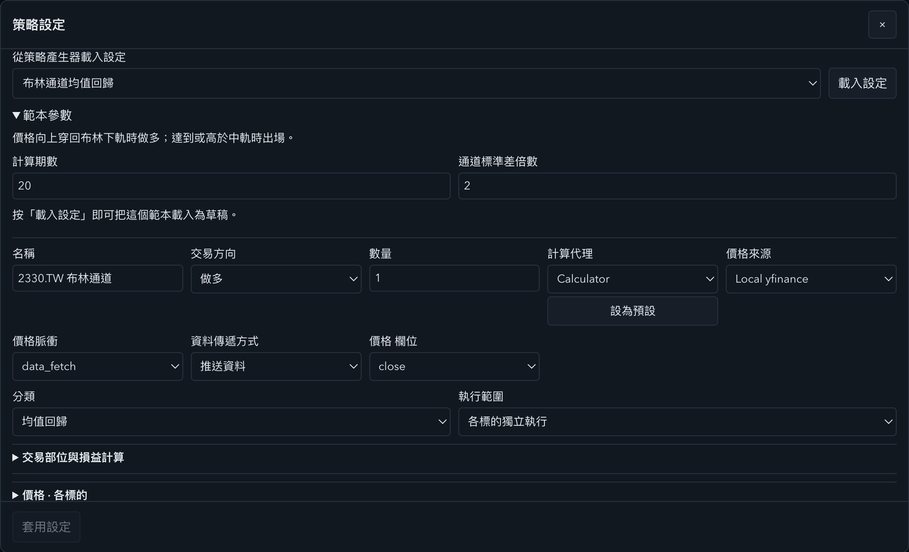
圖 8-1 布林通道均值回歸的範本參數。
計算期數 Calculation period
- 意思
- 中軌與標準差用幾根 K 棒。
- 預設／範圍
- 20；整數 1–1,000。
- 怎麼設定
- 20 是最常見的設定；短線可用 10，較長期用 50。
通道標準差倍數 Band deviations
- 意思
- 上下軌離中軌幾倍標準差。
- 預設／範圍
- 2；大於 0、最大 10（填 0 會出現英文訊息「Value must be greater than 0」）。
- 怎麼設定
- 2.5 或 3 讓下軌更低，只在跌得很深時進場，訊號較少；1.5 訊號較多。
即時計算表與圖表的線條：價格 · 代碼、下軌、中軌、上軌、損益 · 模擬部位。
8.4 回測範例：台積電（2330.TW）
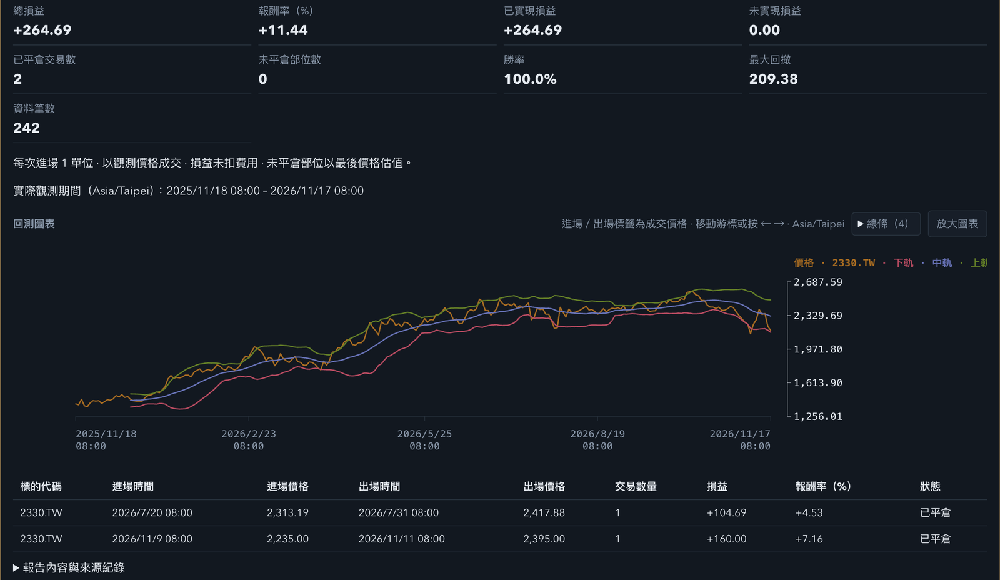
圖 8-2 兩次交易都獲利：7/20 以 2,313.19 進場、7/31 以 2,417.88 出場；11/9 以 2,235 進場、11/11 以 2,395 出場。
兩次都是股價短暫跌破下軌、隨即反彈到中軌。和 RSI 範例 同一檔股票、同一段期間，布林通道的出場條件（回到中軌）比 RSI 的 70 容易達成，所以兩次都順利出場。不過只有兩次交易，樣本很少，不能據此判斷策略好壞。
8.5 小提醒
- 交易次數少時，請用 自動回測 換不同期間多試幾次。
第 9 章 波動收斂突破
9.1 是什麼、何時用
布林通道變得很窄，代表股價進入一段很安靜的盤整；這種「收斂」之後常出現大行情。策略在通道收窄後、價格向上突破上軌時進場，跌破中軌時出場。
| 適合 | 不適合 |
|---|
| 長時間窄幅盤整、等待方向的股票。 | 平常波動就很大的股票：通道很少收窄，幾乎沒有訊號。 |
9.2 怎麼算
- 用「前一根」的寬度與上軌，是因為突破當天通道本身就會變寬。第一個可能的進場在第 N + 2 根。
- 寬度 0.05 代表通道總寬度只有中軌的 5%；標準差倍數 2 時，相當於標準差小於價格的 1.25%。
- 這個範本的進場訊號在策略設定裡以「現有規則」顯示（兩個條件同時成立）；切換成「線性組合」會清掉這個雙條件規則。
9.3 範本參數
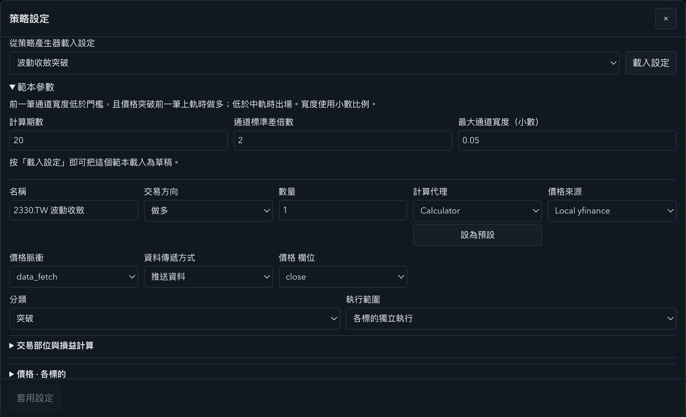
圖 9-1 波動收斂突破的範本參數。
計算期數 Calculation period
- 意思
- 布林通道用幾根 K 棒。
- 預設／範圍
- 20；整數 1–1,000。
通道標準差倍數 Band deviations
- 意思
- 同 第 8 章。
- 預設／範圍
- 2；大於 0、最大 10。
最大通道寬度（小數） Maximum band width (fraction)
- 意思
- 通道寬度（以中軌的比例表示）小於這個值才算「收斂」，用小數表示：0.05 = 5%。
- 預設／範圍
- 0.05；大於 0、最大 10。
- 怎麼設定
- 一年都沒有交易時，改成 0.1 試試；想要更嚴格的收斂改成 0.03。可先在圖表加上「通道寬度」線，看這檔股票平常的寬度大約多少。
即時計算表與圖表的線條：價格 · 代碼、下軌、中軌、上軌、通道寬度、前次通道寬度、前次上軌、損益 · 模擬部位。
9.4 回測範例：台積電（2330.TW）
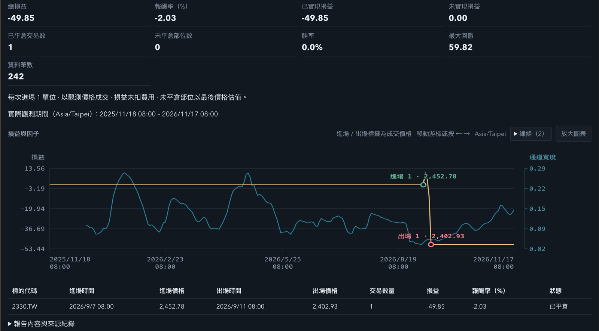
圖 9-2 通道寬度大部分時間都在 0.05 以上；一年只有一次收斂後突破，4 天後跌破中軌出場，小虧約 50。
從圖上的通道寬度可以看出 2330 這一年很少低於 0.05，所以訊號很少。若想要更多交易，可把最大通道寬度改成 0.08–0.1；但寬度放寬後，「收斂」的意義也變弱，請用回測比較。
第 10 章 VWAP 交易
10.1 是什麼、何時用
VWAP（成交量加權平均價）是當天到目前為止的平均成交成本。價格站上 VWAP 代表今天買方較強，策略在價格向上穿越 VWAP 時進場，向下穿越時出場，適合日內（分鐘 K）交易。
只適合分鐘 K 回測。目前即時監看一律使用日 K；在日 K 上每根 K 棒就是一個交易時段，VWAP 幾乎等於收盤價，價格與 VWAP 的「穿越」只是計算上的捨入誤差，會產生沒有意義的訊號。請只用分鐘 K 回測這個範本，不要用它做即時模擬交易。
10.2 怎麼算
- 這裡用的是收盤價（價格欄位），不是（高 + 低 + 收）÷ 3 的典型價。
- 需要每根 K 棒的成交量；yfinance 有提供。某根缺價格或成交量時，累計會從那裡重新開始。
10.3 範本參數
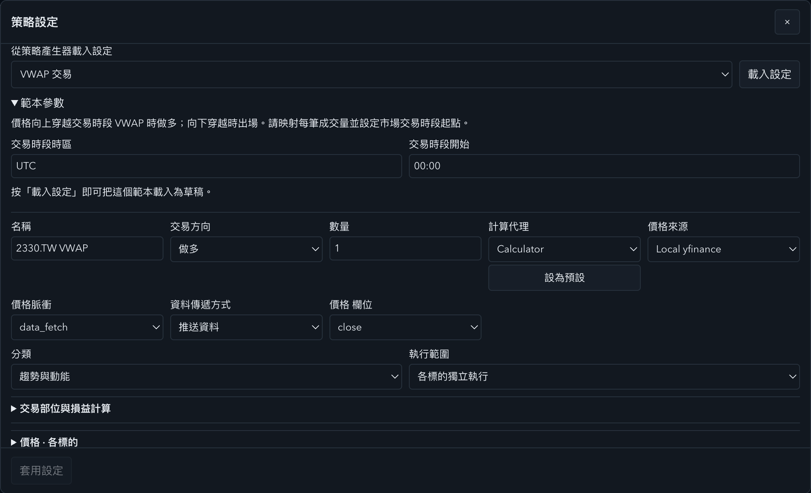
圖 10-1 VWAP 交易的範本參數。
交易時段時區 Session time zone
- 意思
- 用哪個時區切分每天的交易時段。
- 預設
UTC。必須是標準時區名稱（例如 Asia/Taipei），否則出現英文訊息「VWAP timezone must be an IANA timezone.」- 怎麼設定
- 台股交易時間 09:00–13:30（台北時間）等於 UTC 01:00–05:30，預設的
UTC／00:00 已經能把每個交易日分成一個時段。想讓設定更直觀，可改成 Asia/Taipei 搭配開始時間 08:00。
交易時段開始 Session start
- 意思
- 每個交易時段從幾點開始（24 小時制
HH:MM），時段延續到隔天的同一時間。
- 預設
00:00。不能留白，否則載入時出現英文錯誤。- 怎麼設定
- 設在開盤之前、前一天收盤之後的任一時間即可，例如台北時間 08:00。
即時計算表與圖表的線條：價格 · 代碼、成交量、交易時段 VWAP、損益 · 模擬部位。策略設定的「價格 · 各標的」多一個「成交量 欄位」，維持 volume。
10.4 回測範例：台積電（2330.TW）5 分 K
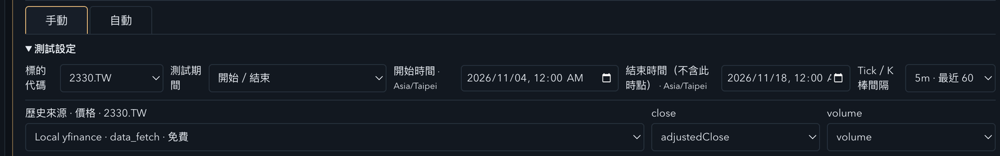
圖 10-2 回測時把 Tick／K 棒間隔 改成 5m，期間在最近 60 天內。
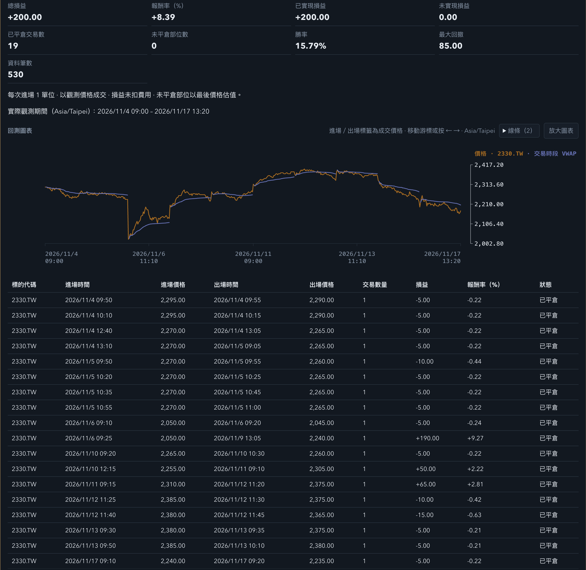
圖 10-3 兩週 530 根 5 分 K，19 次交易，勝率 15.79%，總損益 +200（1 股）。
價格在 VWAP 附近來回時會頻繁進出，大多數是小虧（每次 5–10 元），少數幾次順著當天趨勢賺到較多。這是日內策略常見的樣子。實際交易還要扣手續費與證交稅，次數多時影響很大，請在 交易部位與損益計算 加入成本再回測。
10.5 小提醒
- 1 分 K 只能回測最近 30 天，其他分鐘 K 最近 60 天；超過範圍時「執行回測」按不下去。
- 想在日 K 上使用 VWAP，需要在計算項目把 VWAP 的
mode 改成滾動（rolling）並設定期數，這是進階修改。
附錄 合作夥伴說明
- 富果（Fugle）行情 API 提供台股、期貨等行情資料。在策略監看使用富果資料需要您自己的富果金鑰，方案與價格見 富果行情 API 方案（合作推廣連結）。金鑰的設定方法見《使用指南》第 4 節。
- 期貨需要付費方案：期貨歷史資料需要富果行情 API 的開發者或進階用戶方案。富果的免費方案沒有期貨歷史 K 線，無法執行 2.8 實例二，也無法做期貨的回測。開發者方案的期貨與選擇權歷史資料目前為體驗開放（至 2026/12/31），在富果的文件上標示為 BETA。
- 「合作推廣連結」是 Retis 與富果的合作推廣，帶有來源標記；使用 Retis Terminal 不需要富果帳號。
- Retis Terminal 由 Retis AI 開發與營運，富果僅提供行情資料 API，不負責 Retis Terminal 的內容與功能。